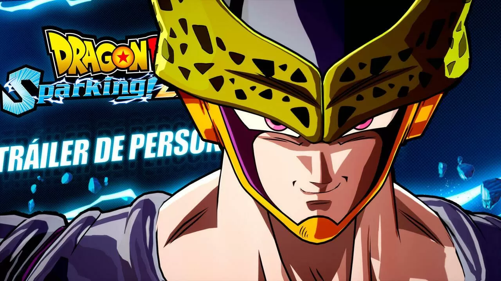

NOVEDADES
Mantente al día con las últimas novedades de la industria del gaming. Desde anuncios de nuevos juegos hasta actualizaciones importantes, aquí encontrarás todo lo que necesitas saber.
Según han confirmado desde Bandai Namco España en Twitter (ahora X), el próximo tráiler de Dragon Ball: Sparking! Zero va a publicarse mañana mismo. En concreto, el vídeo va a estrenarse el jueves 30 de mayo a la 17:00h (hora peninsular española) y lo más importante de todo es que estará centrado en un personaje del juego. Se especifica además que será el "trailer premiere", por lo que entendemos que se trata de un personaje que no hemos visto hasta el momento.
¿Qué personaje se presentará en el nuevo tráiler de Dragon Ball: Sparking! Zero? Precisamente en los últimos días se han producido bastantes filtraciones de Dragon Ball: Sparking! Zero que han ido desvelando sin querer la presencia de personajes en la plantilla del juego de lucha: la última información que se le escapó a Bandai Namco fue la incorporación de Goku Ultra Instinto a la plantilla, y justo antes supimos de la llegada de oten, Trunks, Kale, Kefla y Gotenks, así como de Caulifla de Dragon Ball Super por unas imágenes filtradas.